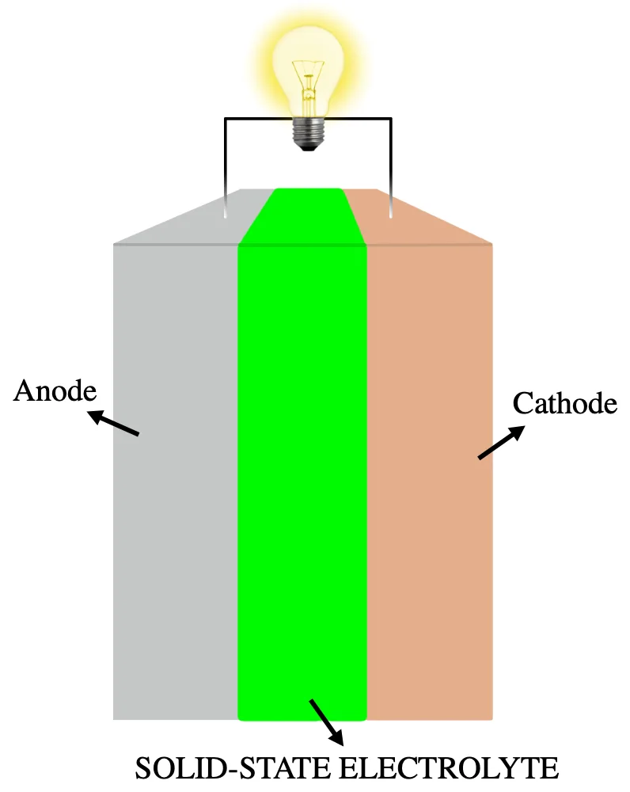
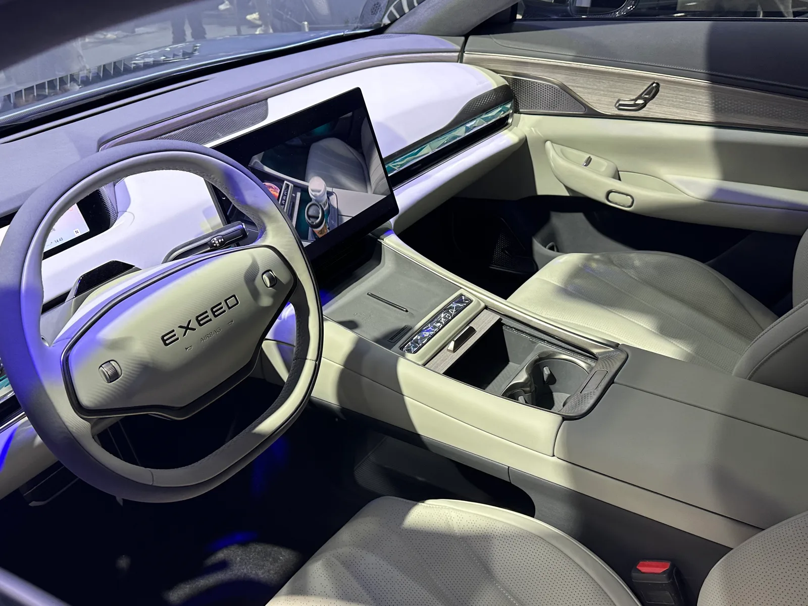

▲ 체리자동차 산하 프리미엄 브랜드 익시드의 전기 세단 스털라 ES. 체리는 이 브랜드를 통해 2027년부터 고체배터리 탑재 차량의 실도로 테스트를 시작할 계획이다
1. 인퉁위에 회장 "2027년부터 고체 배터리 실도로 테스트"
중국 체리자동차 인퉁위에 회장이 2026년 9월 3일 쓰촨성 이빈에서 열린 '2026 세계 전력 배터리 컨퍼런스'에서 2027년부터 고체 배터리(SSB)를 탑재한 차량의 실세계 테스트를 시작하겠다고 공식 발표했다. 고체 배터리는 기존 리튬이온 배터리의 액체 전해질을 고체 전해질로 대체한 차세대 기술로, 에너지 밀도와 안전성을 동시에 끌어올릴 수 있는 대안으로 꼽혀왔다. 체리의 이번 발표는 중국 완성차 업계의 고체 배터리 상용화 경쟁이 한층 구체화되고 있음을 보여준다.

▲ 고체 배터리의 기본 구조. 액체 전해질 대신 고체 전해질(녹색)이 애노드와 캐소드 사이에 자리한다 ⓒ Wikimedia Commons
2. 에너지 밀도 최대 600Wh/kg, 목표는 1회 충전 1,500km
체리가 밝힌 고체 배터리의 셀 에너지 밀도는 400Wh/kg에서 600Wh/kg 범위로, 다양한 변형이 개발되고 있다. 이는 현재 상용화된 리튬이온 배터리 대비 최대 2배 수준이다. 이 같은 에너지 밀도를 바탕으로 1회 충전 시 최대 1,500km 주행이 목표로 제시됐다. 체리는 이를 위해 연구개발 투자 규모도 100억 위안(약 2조100억원) 수준으로 확대한다는 방침이다.
| 항목 | 내용 |
|---|---|
| 에너지 밀도 | 셀 기준 400~600Wh/kg |
| 목표 주행거리 | 1회 충전 최대 1,500km |
| R&D 투자 규모 | 100억 위안(약 2조100억원) |
| 핵심 소재 | 리튬이 풍부한 망간 음극재 + 고체 전해질 |
| 생산 자회사 | 안와신에너지기술, 연 1.25GWh 목표 |
📍 고체 배터리(전고체 배터리)란
고체 배터리는 배터리 내부의 이온 이동 통로인 전해질을 액체가 아닌 고체 소재로 대체한 배터리다. 액체 전해질보다 화재 위험이 낮고, 더 많은 활물질을 채울 수 있어 에너지 밀도를 높이기 유리하다. 다만 고체 전해질과 전극 사이의 접촉 저항을 낮추는 공정이 까다로워, 아직 완전한 형태의 '전고체'보다는 액체와 고체를 함께 쓰는 반고체(하이브리드) 배터리가 먼저 상용화되는 경우가 많다.
3. 2026년 3월 라인 발표부터 2027년 도로 시험까지, 로드맵
체리의 고체 배터리 추진 일정은 이미 올해 초부터 단계적으로 진행돼 왔다. 2026년 3월에는 '라이노 S 전고체 배터리' 생산 라인을 발표했고, 2026년 4분기부터는 라이노 차량에 고체-액체를 혼합한 반고체 배터리 팩을 우선 탑재할 계획이다. 이후 2027년부터 본격적인 도로 주행 테스트에 들어가, 실제 주행 데이터를 축적한다는 구상이다.

▲ 익시드 스털라 ES 실내. 체리 산하 프리미엄 브랜드 익시드는 고체 배터리를 우선 적용할 후보 라인업으로 꼽힌다 ⓒ Wikimedia Commons
4. 첫 적용 후보는 프리미엄 브랜드 익시드의 신형 슈팅 브레이크
고체 배터리를 가장 먼저 탑재할 후보로는 체리의 프리미엄 브랜드 익시드(EXEED)가 2025년 12월 공개한 슈팅 브레이크 신모델 ES8이 꼽힌다. 익시드는 당시 브랜드 나이트 행사에서 ES8을 비롯해 ES7 GT, ET8, ET9 등 신규 라인업을 함께 공개하며 고체 배터리 탑재 계획을 예고한 바 있다. 초기 물량은 라이드헤일링·렌터카 시장에 우선 투입해 실제 운행 데이터를 수집·분석한 뒤, 이를 바탕으로 대량 생산 체제로 전환한다는 방침이다.
생산은 체리 자회사인 안와신에너지기술이 맡는다. 이 회사는 연간 1.25GWh 규모의 고체 배터리 셀 생산능력을 목표로 하고 있으며, 2027년까지 에너지 밀도 500Wh/kg 수준의 배터리 양산 체제를 갖추겠다는 계획이다. 관련 소식은 다나와 자동차 뉴스에서도 확인할 수 있다. 바로가기

▲ 배터리 연구소에서 셀 성능을 검증하는 모습(자료사진). 체리는 R&D 투자를 100억 위안 규모로 확대해 고체 배터리 상용화 속도를 끌어올리겠다는 계획이다 ⓒ Wikimedia Commons
5. 지리·CATL도 뛰어든 전고체 경쟁, 왜 지금인가
고체 배터리 상용화 경쟁에 뛰어든 것은 체리만이 아니다. 지리자동차 역시 전고체 배터리 개발을 가속화하며 올해 안에 테스트 차량 탑재를 예고했고, CATL을 비롯한 배터리 전문 업체들도 2027년 전후를 양산 목표 시점으로 제시하고 있다. 업계에서는 2027년을 전고체 배터리 상용화의 실질적인 원년으로 보는 시각이 많다.
다만 고체 배터리가 실험실 수준의 성능을 실제 양산차에서도 그대로 재현할 수 있을지는 여전히 지켜봐야 할 부분이다. 대량 생산 시 원가를 낮추고 수명·안전성을 검증하는 과정이 남아 있는 만큼, 체리가 예고한 2027년 도로 시험 결과가 업계 전반의 기술 신뢰도를 가늠하는 시금석이 될 전망이다.
✅ 체리자동차 고체 배터리, 이것만은 확인하세요
· 인퉁위에 회장, 2026년 9월 3일 2027년 고체 배터리 실도로 테스트 계획 공식화
· 에너지 밀도 400~600Wh/kg, 목표 주행거리 1회 충전 최대 1,500km
· R&D 투자 100억 위안(약 2조100억원)으로 확대
· 2026년 4분기 반고체 배터리 우선 탑재, 2027년 본격 도로 시험
· 첫 적용 후보는 프리미엄 브랜드 익시드의 슈팅 브레이크 ES8
6. 정리
체리자동차의 고체 배터리 계획은 에너지 밀도를 두 배 가까이 끌어올려 1회 충전 1,500km 주행을 노리는 야심찬 목표다. 2026년 4분기 반고체 배터리 탑재를 거쳐 2027년 본격적인 도로 시험에 들어간다는 로드맵도 비교적 구체적으로 제시됐다. 다만 지리자동차 등 경쟁사들도 비슷한 시점을 목표로 개발에 속도를 내고 있는 만큼, 실제 양산차에서 발표된 성능을 그대로 구현할 수 있을지는 2027년 도로 시험 결과를 지켜봐야 할 것으로 보인다.